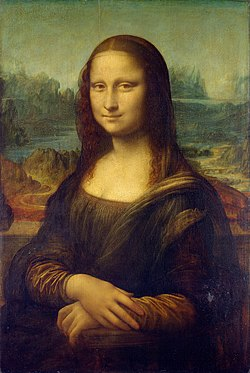

"Мона Лиза"
«Мо́на Ли́за», или «Джоко́нда» (итал. Mona Lisa, La Gioconda, полное название — «Портре́т госпожи́ Ли́зы дель Джоко́ндо», итал. Ritratto di Monna Lisa del Giocondo) — картина Леонардо да Винчи, одно из самых известных произведений живописи. Точная дата написания неизвестна (по некоторым сведениям, написана между 1503 и 1505 годами). Ныне хранится в Лувре. Считается, что на картине изображена Лиза Герардини, супруга флорентийского торговца шёлком Франческо дель Джокондо.
Ещё первые итальянские биографы Леонардо да Винчи писали о месте, которое занимала эта картина в творчестве художника. От работы над «Моной Лизой» Леонардо не уклонялся — как это было со многими другими заказами, а, наоборот, отдавался ей с какой-то страстью. Ей было посвящено всё время, остававшееся у него от работы над «Битвой при Ангиари». Он потратил на него значительное время и, покидая Италию в зрелом возрасте, увёз с собой во Францию в числе некоторых других избранных картин. Да Винчи испытывал особенную привязанность к этому портрету, а также много размышлял во время процесса его создания, в «Трактате о живописи» и в тех заметках о технике живописи, которые не вошли в него, можно найти множество указаний, с несомненностью относящихся к «Джоконде».